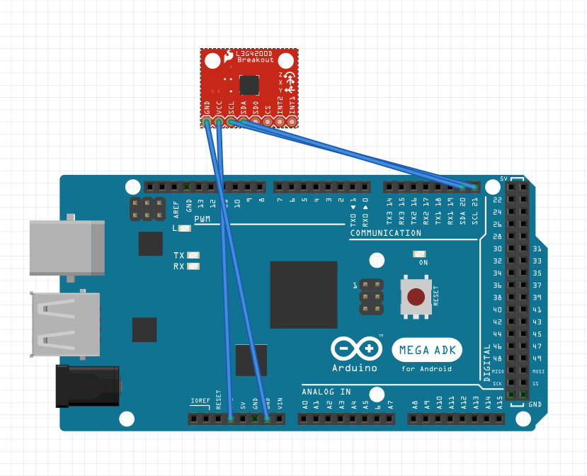

Interface from ISensor.
Every Force sensor code is available in Force/ folder.
In order to get the position and forces that apply to the drone we use an Nine-Axis (Gyro + Accelerometer + Compass).
In order to make our project the most generic and reliable possible, we use the MPU6050 / MPU9150 sensor library from Adafruit.
The MPU-9050 does not need a lot of configuration. Just plug the GPS with the followi ng:
